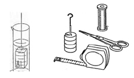

Figura 1: Diagrama del Material |
 |
Paralelepípedo |
 |
Unidades de Medida |
 |
Experimento 1:
Medimos con la cinta métrica los lados de una hoja y calculamos su superficie.
Con la cinta métrica podemos medir con una exactitud de hasta 1 mm.
Intentamos determinar con la cinta métrica la altura media del compañero del grupo de trabajo.
Medimos la altura de todos los miembros del grupo, sumamos los valores y dividimos entre el número de las medidas tomadas.
Experimento 2:
Determinamos con el vernier el tamaño del paralelepípedo de aluminio, Con el vernier podemos llevar a cabo mediciones del
paralelepípedo de hasta una exactitud de 0,1 mm
Con ayuda de los resultados podemos calcular el volumen del paralelepípedo.
Indicación: El tornillo micrométrico nos permite llevar a cabo mediciones todavía más exactas.
En ingeniería, ciencia, industria y estadística, se denomina exactitud a la capacidad que tiene un instrumento de medir un valor cercano al valor de la magnitud real.
Suponiendo varias mediciones, no estamos midiendo el error de cada una. Sino la distancia a la que se encuentra la medida real de la media de las mediciones. (es decir cuán calibrado está el aparato de medición).
Esta cualidad también se encuentra en instrumentos generadores de magnitudes físicas, siendo en este caso la capacidad del instrumento de acercarse a la magnitud física real.
En ingeniería, ciencia, industria y estadística, se denomina precisión a la capacidad de un instrumento de dar el mismo resultado en mediciones diferentes realizadas en las mismas condiciones. Esta cualidad debe evaluarse a corto plazo. No debe confundirse con exactitud ni con reproducibilidad.
Es un parámetro relevante, especialmente en la investigación de fenómenos físicos, ámbito en el cual los resultados se expresan como un número más una indicación del error máximo estimado para la magnitud. Es decir, se indica una zona dentro de la cualestá comprendido el verdadero valor de la magnitud.
Con la cinta métrica podemos medir la longitud con una exactitud de hasta 1 mm; con el vernier podemos medir la longitud con una exactitud de de hasta 0,1 mm.
Podemos calcular la superficie y el volumen de un cuerpo regular cuando hemos llevado a cabo las mediciones correspondientes.
Realice una investigación acerca de los conceptos de incertidumbre en las mediciones físicas.